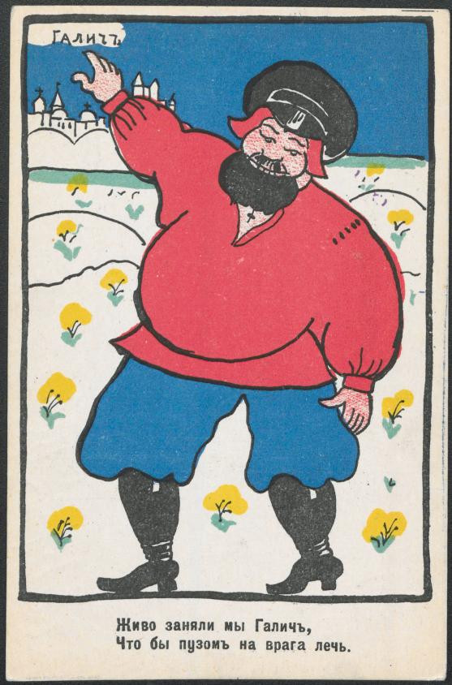
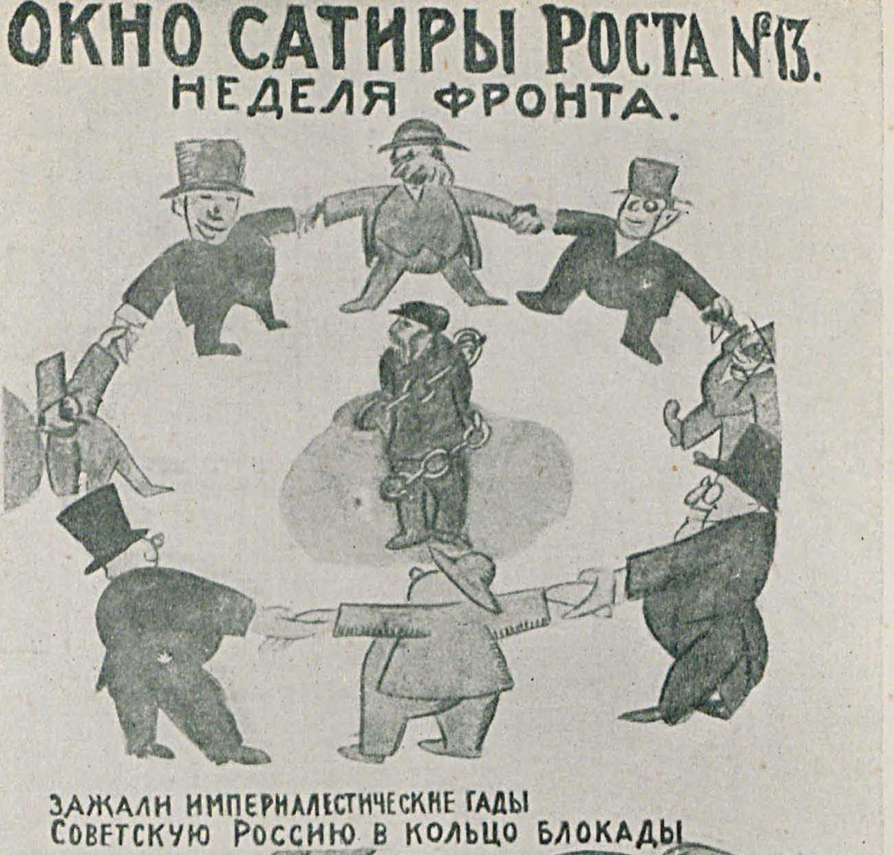

«Чтобы пузом на врага лечь…»
Принято считать, что поэты и художники авангардных направлений придерживаются левых взглядов. Левый - еще не значит большевик. Многих левых - эсэров, анархистов, меньшевиков - большевики кромсали с не меньшим остервенением, чем правых - монархистов, белогвардейцев, кадетов. Однако был в революционную эпоху момент, когда даже самые отчаянные борцы с буржуазными предрассудками превратились в завзятых ура-патриотов. Речь, конечно же, идет о последних неделях лета 1914 г., когда Россия вступила в Первую мировую войну. Даже Анна Ахматова написала тогда знаменитое стихотворение, заканчивающееся словами
…чтобы туча войны над Россией
стала облаком в славе лучей.
Не минула милитаристская горячка и Маяковского. Уже в 1914 г. он направляет свой патриотический пыл в рисование плакатов во такого рода:

Интересно, что стихи Маяковского служат подписями к картинкам, написованым другим великим революционером от искусства - Казимиром Малевичем, автором «Черного квадрата». Оба - и поэт, и художник - при большевиках стали светочами каждый в своей области, жили не то чтобы безбедно, но, по крайней мере жертвами репрессий не стали. А вот поди ж ты, в 1914 г. подрядились выполнять имперский идеологический заказ.
В творческом наследии В.В. Маяковского сохранилась обширная подборка двустиший, прославляющих успехи российской армии. Некоторые из них, если отвлечься от малосимпатичной цели, вполне остроумны. Кроме того, эти милитаристские «частушки», оформленные в виде народных лубков и открыток, могут послужить современным историкам хорошим пособием по запоминанию хода боевых действий на Восточном фронте Первой мировой войны:
Сдал австриец русским Львов,
Где им зайцам против львов!Да за дали, да за Краков
Пятить будут стадо раков!Австрияки у Карпат
Поднимали благой мат.Гнали всю Галицию
Шайку глуполицую.Шел австриец в Радзивилы,
Да попал на бабьи вилы.У Вильгельма Гегенцоллерна
Размалюем рожу колерно.В славном лесе Августо́вом
Битых немцев тысяч сто вам.Враг изрублен, а затем он
Пущен плавать в синий Неман.Эх и грозно, эх и сильно
Жирный немец шел на Вильно,
Да в бою у Оссовца
Был острижен, как овца.Турки, севши у Димотики,
Чешут с голоду животики.
и т.д.
Опыт создания такой наглядной агитации пригодился Маяковскому позднее, при большевиках, когда он участвовал в создании знаменитых Окон РОСТА.

Как видим, стихотворная подпись совпадает с работами 1914 г. и по стилю, и по размеру. Участвовал в создании Окон РОСТА и Казимир Малевич, хотя на этот раз он в проекте не стал ведущим художником. Нельзя не признать, что эти работы стали прорывом в деле пропаганды и агитации, а если говорить в стратегической перспективе - заложили основу для массовой графической культуры на многие десятилетия вперед не только для России, но и в мировом, так сказать, масштабе. Восхититься этим обстоятельством мешают, правда, пара моментов. Во-первых, эти работы зовут людей на смерть, но даже не это главное. В конце концов когда идет война, что-то подобное всегда появляется. Хуже другое: сначала деятели искусств призывают биться на смерть за царя-батюшку, потом - воевать с теми, кто бьется на смерть за царя-батюшку. Самое же интересное - накануне октябрьских событий 1917 г. эти же самые люди призывали бросать оружие и дезертировать с фронта. Об этом - пацифизме Маяковского - речь пойдет в следующем тексте.